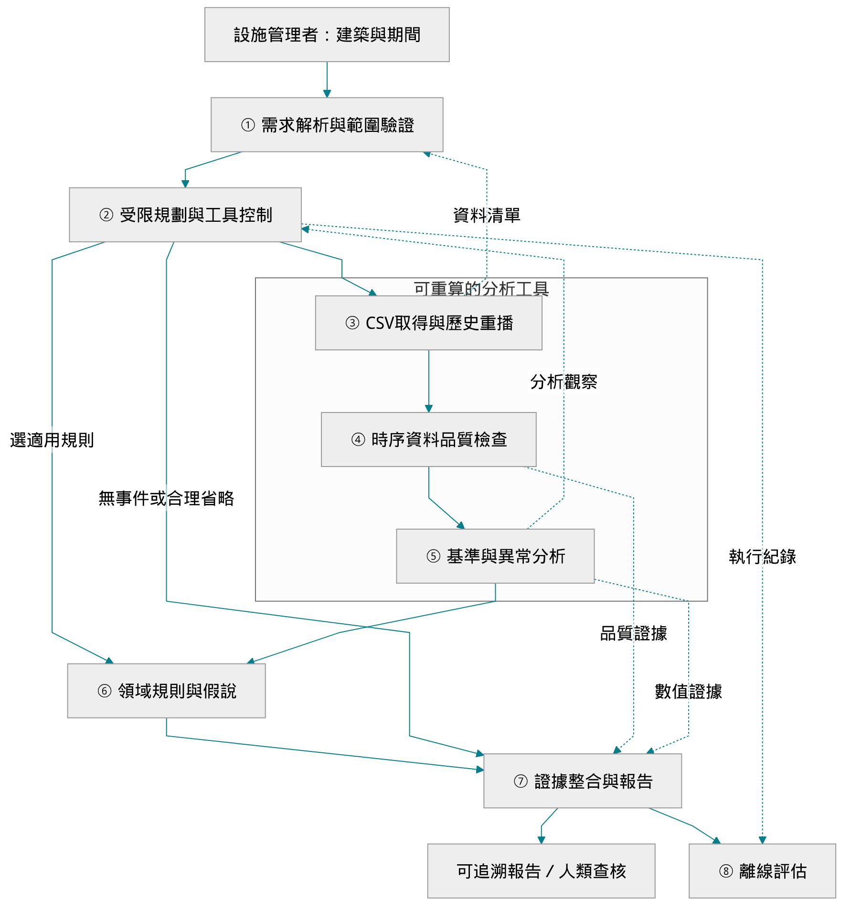

DIC3 — Project Proposal Refactor using OpenSpec｜第25組｜2026-11-13
組員：7114056008 侯如蓁、7114056093 蔡奇勳、7114056126 施秉榕、7114056143 陳睿彪。
狀態：提案與設計規格已整理；產品程式、BDG2分析及實驗均未完成。 本文為新增重構版；期中原稿與簡報保留。引用標記A1–A6與D1–D9均見文末References；查核範圍見來源稽核。
A. Attention Getter. IEA估計2025年建築部門貢獻全球用電增量近45%，顯示營運分析的重要性；此值不是建築總用電占比，也不是可節能比例。D1
B. But. 現有建築Agent已有工具分析與動態取得證據，但公開總表缺設備根因標籤，資料清理、缺情境與不受支持的文字主張仍須獨立驗證。A4、A6、D3、D6
C. Cure. 本專題提出Energy Detective，以有限資料支援可追溯的異常初步調查，供校園／辦公設施人員查核，不直接確診設備。
D. Development. LLM解析需求及選受限工具，Python依序做資料品質、B0/B1基準、殘差與事件計算，領域規則連接天氣、作息與零值背景，報告逐項引用證據並具模板降級。
E. Experiments. 規劃單棟BDG2歷史重播與按時間8/2/2週切分，另建合成注入副本；比較兩統計基準及固定模板、固定流程＋LLM、受限Agent三組，以MAE、合成命中、必要資訊、主張正確與成本驗證RQ1–RQ3。
F. Expected Outcomes. 預期交付可重現調查流程、可審核證據格式與比較紀錄；目前無實驗findings，不預設Agent勝出，不宣稱節能率或設備診斷準確率。
建築用電成長使營運調查更為重要，但總表偏離無法直接證明設備故障，既有圖表也仍需人工核對資料品質與背景。本專題提出建築用電異常調查代理人，以公開歷史電表、天氣與建築資訊重播調查情境。系統由語言模型解析需求及選擇受限工具，以程式執行品質檢查、同星期時段基準、殘差校準與事件合併，再整合領域規則產生附證據的繁體中文報告。證據不足時停用不適用規則，數值或引用驗證失敗則採固定模板。評估將以時間隔離的資料比較兩種統計基準及三種報告流程，分別檢驗合成異常敏感度、任務完整度、證據正確性與執行成本。目前完成提案與規格，尚未實作或實驗；預期建立可追溯、可重現且能誠實揭露限制的調查流程，不宣稱故障確診或已實現節電。
字數：299字。計算方式：Python len(re.sub(r"\s", "", text))，以Unicode code point計算，含標點與每個英數字元，不含空白與換行；不包含標題與計數說明。原文另存 research/refactor/abstract-zh.txt，驗證程式會重算。
Title—Energy Detective: An Evidence-Grounded Agent Architecture for Building Electricity Anomaly Investigation
Abstract— Building electricity monitoring provides extensive observations but does not by itself establish equipment faults or actionable causes. This proposal presents Energy Detective, an evidence-grounded agent architecture for investigating aggregate electricity anomalies under limited operational context. A language model interprets requests and selects bounded tools, while deterministic analysis performs data-quality checks, constructs global and hour-of-week median baselines, calibrates residual thresholds, and groups candidate events. Domain rules incorporate available weather and operating-schedule information without treating statistical deviations as causal diagnoses. Structured evidence records bind numerical claims to data versions, buildings, time intervals, and units. Unsupported outputs trigger explicit limitations or a deterministic reporting fallback. Planned evaluation uses a chronological subset of Building Data Genome 2, separate synthetic perturbation experiments, and matched comparisons among template reporting, a fixed workflow with language generation, and the constrained agent. The evaluation will examine baseline error, perturbation sensitivity, task completeness, evidence correctness, and execution cost, with ablations to assess planning and evidence validation. The current work comprises a research proposal and testable design specifications; implementation and experiments remain future work. Expected outcomes are a reproducible investigation workflow and an auditable evaluation protocol, rather than verified fault diagnoses or demonstrated energy savings.
Index Terms— Building energy management, evidence provenance, intelligent agents, large language models, time-series anomaly detection.
英文採IEEE Systems Journal式系統論述語氣與單段摘要，不代表已符合該期刊投稿格式或已獲接受。
建築能源管理的問題不只在於取得更多電表讀值，也在於如何將讀值轉成可信的調查行動。IEA《Global Energy Review 2026》估計，2025年全球用電需求成長約3%，建築部門貢獻當年用電增量近45%。D1 此處母體是全球年度增量，並非總用電占比，也不表示個別建築浪費了相同比例的能源。這項證據指出建築營運分析的時效性；真正值得檢驗的問題，則是資料能否支援一份可回查、可採取下一步行動的調查報告。
本專題設定校園與辦公建築設施管理者為目標使用者，這是尚待訪談驗證的應用情境。管理者看到週末用電升高時，需要先確認資料是否缺漏、比較時段是否合理、氣溫及營運條件是否改變，再決定查閱排程或設備紀錄。能源資訊系統與故障偵測診斷工具已有實務應用，D7 但本專題可取得的資料解析度低於具設備狀態與語意模型的管理系統。因此，我們將任務定義為：對指定建築及歷史期間，辨識相對基準的候選偏離事件，列出支持觀察的數值、適用條件與缺少的證據，產生供人員查核的建議。
既有方法提供互補能力。統計基準可重跑但無法單憑殘差解釋設備原因；條件預測模型可描述負載，但模型適應性仍受本地資料與季節影響。D9 工具型語言代理可依外部觀察調整行動，A1 建築自動化研究更已結合Brick查詢與程式生成，A4 2026年的設備級能源研究也實作條件式證據取得與報告。A6 因此，採用LLM或Agent不是本專題足以成立的創新主張。
這些方法轉用至公開總表時有三項限制。首先，總表可能同時反映多設備與占用變化，統計異常不能直接提供設備根因。其次，資料前處理會改變候選異常：BDG2的cleaned版本移除部分離群與零值，若將其當作完整觀測，可能在偵測之前就刪掉研究對象。D3、D6 最後，工具成功與報告可信並不等價；建築LLM研究曾出現程式錯誤與文字遺漏感測器，A4 正確數值亦可能被套到錯誤期間或用來支持過強結論。DOE量測與驗證指南對基準及量測邊界的區分，也使我們不能將偏差和命名為已節省能源。D8
Energy Detective的設計思路是限制每一層可作出的結論。程式計算品質、基準與殘差；LLM只在固定工具、資料範圍與呼叫預算內解析需求、選擇領域查核和整理文字。每個數值主張均指向包含建築、期間、單位、方法與來源列的證據；缺天氣時保留用電分析，缺核心量測或單位時停止，報告驗證失敗則輸出固定模板。與設備級診斷方案相比，本專題主動收窄為總表初步調查，將缺資料與拒答能力列入驗收，而非以更多診斷詞彙掩飾證據不足。
預期貢獻分為三層。系統整合價值在於串接受限工具、證據契約及可檢查的失敗路徑；應用價值在於讓使用者看到可回查的調查線索與下一步所需紀錄；方法層面的研究主張僅是待驗證假設：受限規劃及證據檢查是否能在維持必要資訊時減少不必要規則評估並攔截錯誤主張。研究以RQ1基準品質、RQ2規劃效益與RQ3證據驗證分別檢驗，容許固定流程勝出或沒有改善，不預設節能成效。以下依序比較AI與建築領域研究，提出深度思維與爭點，說明系統設計、評估協議及開發規格，最後整理預期成果與限制。
ReAct把動作及觀察納入推理流程，提供「分析結果會改變下一步」的Agent定義。A1 建築BAS研究進一步將語意模型查詢與生成程式連接，但需要既有Brick結構，也會因查詢、索引或回答遺漏而失敗。A4 Energy Detective保留觀察後選工具，改用固定工具契約，代價是無法自由回答任意分析問題；這是可驗收性的工程選擇，並非新的Agent理論。
異常偵測與解釋是不同工作。Argos以LLM產生可執行規則並與偵測器融合，需要標註與訓練回饋；A2 多模態複核研究從候選告警中刪除疑似誤報，但其全文顯示漏失風險，且基準參數選擇使用測試真值，不能直接當成無標籤部署的保證。A3 Time-RA則將細分類及文字說明做成學習任務，AI輔助標註可擴大資料量，仍不是現場維修根因的獨立真值。A5 本專題因此不讓LLM覆寫偵測標記，而將說明品質與數值分析分開評估。
2026年的Smart Energy Agent已結合設備級預測、異常偵測、條件式RAG與分階段報告，對「資料分析到調查建議」構成直接近似研究。A6 其設備資料與人工情境評分，和本專題只有總表、缺設備真值的條件不同。這支持我們將比較焦點放在共同證據下的規則成本、必要資訊與錯誤主張，不能以工具可選或有報告作為首創證據。
能源領域首先要求對量測單位與時間有一致解讀。BDG2提供2016–2017年的逐時多建築資料、metadata及天氣，使固定歷史重播可重現；但3,053是各類計量表總數，不是全數電表，資料也不是臺灣建築樣本。D3 作者資料文件對raw、cleaned及Kaggle版本有不同處理與單位說明，D6 因此不能任意互換下載入口。總表異常研究宜保留可疑觀測及品質旗標，再讓分析決定能否使用；這是依研究目的選擇處理方式，不是主張raw永遠優於cleaned。
其次，「正常」應與使用條件一起定義。建築用途、週期、天氣及季節會改變基準，Park等人的建築預測比較顯示本地調整及上下文長度的重要性。D9 Energy Detective最低版本採同星期／小時中位數，氣溫僅提供背景，並未完成天氣校正。這個低成本對照有助分離Agent的額外效益，但若遇營運漂移，其低MAE或高殘差都不能被直接解讀為正常或故障。
最後，分析必須接回管理者的查核與介入。LBNL的建築分析計畫提供EMIS實務證據，卻不是單一Agent的隨機對照試驗；D7 DOE的量測與驗證方法要求合理基準及改善後觀測，也區分整棟與個別措施的驗證能力。D8 因此本專題將觀察、假說與下一步行動分欄，沒有現場介入就不報節能率。宏觀需求成長D1說明動機，資料文件D3、D6限制可計算事項，實務及量測方法D7、D8則限制可宣稱的效益，三者不能互相替代。
Findings為各來源的作者結果／官方內容，不是本專題實測；Limitation包含本提案對外推範圍的判斷。六篇AI研究與六份領域論文／官方文件按內容互補，非以篇數宣稱完成系統性回顧。
| Ref. | Year | Problem | AI Method | Domain Knowledge | Dataset | Findings | Limitation |
|---|---|---|---|---|---|---|---|
| A1 ReAct | 2023 | 推理缺外部觀察 | 行動與觀察交替提示 | 任務工具及檢索 | HotpotQA、FEVER、ALFWorld、WebShop | 展現工具互動價值 | 非建築驗證；可能重複無效動作 |
| A2 Argos | 2025 v1 | 雲端異常可重現與解釋 | LLM規則生成、修復、融合 | 標註異常與偵測器 | KPI、Yahoo、內部監控 | 所測設定有融合效益 | 有標註需求、Event-F1 PA與最佳試驗報告限制 |
| A3 Yang等 | 2025 v1 | 候選告警人工複核 | k-NN＋多模態LLM投票 | 資料產生背景 | 18個Hexagon/UCR單變量集 | 誤報降低伴隨不同漏報代價 | 基準近最佳參數依測試真值；非部署校準 |
| A4 Mulayim等 | 2025 | BAS資料難查詢分析 | GPT-4o、SPARQL/Python | Brick、設備關係 | FLEXLAB兩測試空間 | 三題各五次；氣流下降題3/5 | 小樣本，部分成功回答仍遺漏感測器 |
| A5 Time-RA | 2025 v1 | 異常缺類型與說明 | LLM回饋標註與微調 | 異常分類、背景 | RATs40K跨領域 | 作者展示分類／說明學習 | 主要類型可能遮蔽多重異常；非現場根因標註 |
| A6 Falouz等 | 2026 v1 | 設備告警難轉建議 | SSA-LSTM、LSTM-VAE、三階段Agent | 設備規則與可靠性上限 | 七辦公設備；16人工情境 | 動態取得背景在作者評分中維持品質 | 設備級與人工情境不能證明總表根因或本專題效益 |
| D1 IEA | 2026 | 全球用電變化 | N/A；統計 | 部門及天氣 | 2025全球統計估計 | 建築貢獻用電增量近45% | 不是總量占比，也非單棟浪費率 |
| D3 BDG2 | 2020 | 多建築公開資料不足 | 資料集建置與品質處理 | 用途、單位、場址 | 1,636非住宅建築、19場址、兩年 | 提供多源能源分析基礎 | 無本專題所需現場設備故障真值 |
| D6 Meters data features | 未標年；查核2026 | 版本語意混淆 | S-H-ESD為cleaned程序之一 | 零值、逐時量測、當地時間 | BDG2各版本 | 明示cleaned移除離群／零值 | 清理假設不是設備故障標籤 |
| D7 LBNL EMIS報告 | 2020 | 分析工具實務效益 | 多種EIS/FDD，非單一AI | 持續監測與營運改善 | 104組織、6,500建築 | 實務計畫呈現分析改善價值 | 不能隔離單一演算法的因果效果 |
| D8 DOE FEMP指南 | 未標年；查核2026 | 如何驗證節能 | N/A；工程量測、回歸、模擬 | A–D量測邊界、基準調整 | 指南，無單一資料集 | 明確區分系統與整棟驗證 | 不是異常偵測或Agent實驗 |
| D9 Park等 | 2025 v1 | 通用模型適應建築 | Chronos、全量／LoRA調整 | 占用、HVAC、季節 | 日本SUSTIE建築區域時序 | 本地適應與長上下文影響品質 | 同棟區域泛化非跨建築根因診斷 |
既有研究已有分析、規則、動態取得資料及建築Agent；其限制在於驗證資料、任務與可宣稱結論不一致，不能直接證明公開總表條件下的報告可靠性。故本專題的研究缺口是選定的情境驗證缺口：在缺設備根因與作息資料時，能否以固定分析、受限選工具、主張層級證據比對與明確降級，產生完整又不越界的調查報告？我們以同一B1結果比較三種流程，並對驗證器與領域條件作消融，讓RQ2／RQ3可被否證。這不是宣稱文獻從未處理證據、拒答或總表，更不是提出新的異常偵測演算法。
以下是根據來源歸納的領域工作原則，不把它們宣稱為經普查排名的五大共識。
概念與意義：相同讀值在不同星期、季節與營運條件下有不同意義。證據：建築預測研究比較不同上下文與本地適應，D9 量測驗證也要求合理基準。D8 適用條件／限制：歷史基準可能已含異常，週期模型無法自動排除天氣或營運漂移。設計影響：⑤同時保留B0/B1，固定時間切分；⑥只把天氣作背景。RQ1以同有效點比較MAE，不用MAE代表故障識別。
概念與意義：零值是觀測，缺值是未知，兩者不能互換。證據：BDG2文件明列清理時哪些值被換成NaN。D6 適用條件／限制：raw也經初步處理，保留不等於全部可分析。設計影響：③保存來源；④以完整時間格點算覆蓋率，衝突遮罩、缺值不補零；⑤跨缺口中斷事件。資料不足是可接受輸出，不是可被LLM補足的數字。
概念與意義：總表殘差是觀察，設備原因是需要額外證據的假說。證據：DOE區分系統及整棟驗證範圍；D8 設備級Agent本身使用較細資料。A6 適用條件／限制：在有設備量測、工單或介入試驗時可擴大結論，本版本沒有。設計影響：⑥明列替代解釋和缺資料；⑦拒絕把偏差命名成已節電，人工語意審閱補足數值驗證。
概念與意義：管理者處理的是調查事件，不是每個時間點各一則訊息。證據：EMIS實務把分析放在持續監測及改善流程內。D7 適用條件／限制：合併可以減少訊息，卻未必減少查核時間或保留所有根因；沒有訪談或計時不能宣稱省時。設計影響：⑤只合併相鄰同方向點，⑦列期間、品質與下一步，⑧將必要資訊完整度與成本一起報告。
概念與意義：固定資料版本與參數讓人重算，不會自動使單棟結果適用其他場址。證據：BDG2的建築及場址有異質性；D3 Park等人的驗證範圍是特定建築區域與季節。D9 適用條件／限制：公開歷史資料與API模型版本仍有年代及供應商差異。設計影響：⑧記錄SHA-256、切分、seed、模型與提示詞；三次重跑不算三個獨立建築，跨場址測試留到擴充。
未找到可證明「全領域最激烈前三名」的調查，因此如實區分研究方法爭點與工程取捨。
A的最強依據：已知量測錯誤會污染基準，BDG2提供有明示程序的cleaned，適合需要較一致輸入的建模。D6 B的最強依據：同一清理程序會刪掉尖峰及零值，異常調查可能因此失去觀測對象；raw與cleaned並存讓差異可追查。D3、D6 目前可採共同原則：保留來源與處理理由，依目的定義可分析資料；這是本提案綜合，而非引述共識聲明。未解問題是缺現場紀錄時何者為量測錯誤。立場與代價：本版raw＋品質遮罩，承擔較多無法判定事件；cleaned比較列後續敏感度分析，不為使圖好看刪掉測試尖峰。
A的最強依據：可重用模型能利用預訓練知識，Park等的長上下文零樣本比較支持研究低資料使用方式。D9 B的最強依據：同文短上下文零樣本表現不理想，本地微調改善其所測品質。共同原則是同資料與預測跨度比較並計入資料／計算成本；沒有證據宣稱一方普遍勝出。未解問題是不同建築與季節下需要多少資料才能值得調整。立場與代價：先用逐棟B0/B1控制工作量，犧牲學習複雜非線性與跨建築遷移能力；本次不實作基礎模型微調，若B1失敗照實報告。
A的最強依據：2026設備Agent比較靜態與動態背景取得，顯示選擇性取得可能保留評分並降低上下文量。A6 B的最強依據：建築LLM研究揭露小規模任務仍有查詢錯誤和回答遺漏，A4 支持固定流程較易檢查完整性的風險論證；該文不是直接證明固定流程必勝。最低共同要求是完整記錄證據與失敗，效益必須連同品質和成本評估；這是工程原則而非全領域共識。未解問題是規劃花費是否抵消少做規則的成本。立場與代價：只允許一次觀察後選規則，以相同工具做三組比較；規劃彈性較低，但可定位錯誤。若固定流程品質相同且更便宜，採固定流程作後續建議。
參考回答：第一，CSV中的總量沒有唯一設備分解；第二，LLM文字生成不能補足缺少的量測；第三，即使答案聽來合理，仍缺可重算依據。因此先由工具算出「何時偏離多少」，再列可區分活動、排程或量測問題的證據需求。影響：①②限制任務，⑥⑦不確診設備，C10專門驗收過度推論。
參考回答：B1只控制星期與小時，未控制溫度；變熱與用電同時增加可由正常冷房需求解釋。應先比對同時天氣並保留替代原因，若要說效率改變需設備輸出、舒適條件與更適當反事實。影響：⑥只輸出背景提示；未來才比較天氣模型，現在不宣稱已排除溫度。
參考回答：提高門檻會減少警示，但也可能失去弱事件；在沒有真實標籤時，少警示不能叫少誤報。需同時看合成事件命中、漏失與成本，且只在校準期決定門檻。影響：⑤嚴格隔離測試；⑧報完整分母，不事後挑高分門檻。
參考回答：零值是六個有效讀值，可形成下降事件及待查假說；缺測沒有測得電量，不能補零建立假下降。即使零值真實，也可能停館而非斷電，需供電或營運紀錄區別。影響：④保留旗標，⑤遇缺測中斷，⑥ zero_run_check只對有效零值，C02/C06驗證。
參考回答：可以回答較小的問題。合成注入具有已知擾動起訖，可測特定敏感度；人工審閱可測報告是否支持主張；兩者都不能當設備真故障標籤。應保留未注入副本，標示注入前已有警示，避免重複歸功。影響：⑧分開報MAE、合成命中和主張品質，禁止報現場故障precision/recall。
參考回答：固定同一B1、資料與可用工具，先比較模板與固定流程＋LLM以觀察生成差異，再比較固定流程＋LLM與Agent以觀察規劃差異。文字少可能提高表面追溯率，故必要資訊完整度必須一起比較。影響：RQ2使用成對案例和同模型報告提示詞；記錄規則評估數而不只工具次數。
參考回答：ID只證明紀錄存在。相同數字可能屬另一棟、另一時間或不同單位；「偏高」也不支持「空調故障」。先程式比對值、單位、對象、期間與field，再由人檢查語意是否超出證據。影響：⑦採主張契約與模板降級；RQ3分開測五類錯誤，因果語意不能假裝由ID檢查解決。
參考回答：可以計算相對固定基準的偏差和，但不能把它轉成可消除負載。四小時每小時多60 kWh，只能說偏離240 kWh；若要節電量，需介入前後、基準調整與服務條件證據。影響：⑦使用「偏離」措辭，列工單／排程需求；C10拒絕已節電斷言。
參考回答：先分錯誤類型；只有load_window暫時性I/O可同參數重試一次，缺檔、schema及計算錯誤不靠重試修好。規則失敗可保留已算證據；報告LLM失敗用本地模板；需求或規劃LLM失敗則保存錯誤並停止。影響：②總工具預算10，LLM另有呼叫上限；C08與擴充契約案例驗證每條路徑。
參考回答：三次只顯示固定案例的重跑穩定性；建築、氣候、時區與用途皆未改變，也可能模型版本飄移。外推需要保留場址、當地資料與實際管理者查核。影響：⑧保留模型識別、原始失敗與分歧；結論只限所測建築，後續擴充不寫成本次成果。
建築電表可記錄長期用電，但使用者仍需逐一檢查異常時間、比較歷史型態，並整理可能原因。Energy Detective 預計讓使用者提出「某棟建築最近有哪些值得調查的用電異常？」後，由 Agent 規劃受限分析、呼叫 Python 工具，回傳含時間、數值、證據與後續查核建議的報告。
研究問題是：在無真實設備故障標籤的公開時序資料上，能否以可重現的統計分析與受限工具，讓 Agent 完成可追溯的用電異常初步調查？本專題不以判定設備故障或估計已實現節電量為目標。

| 編號 | 預定模組 | 職責與邊界 |
|---|---|---|
| ① | 需求解析與範圍驗證 | 將自然語言轉為 building_id、start、end、調查目標；核對可用建築與期間，缺值即回覆待補資訊。 |
| ② | 受限規劃與工具控制 | LLM 從固定工具與允許參數產生結構化計畫；控制器驗證依賴、資料範圍、呼叫預算及重試。分析後 LLM 依品質／事件觀察決定適用規則或跳至報告，控制器再次檢查。 |
| ③ | CSV 取得與歷史重播 | 依設定讀取本機公開資料子集，解析原始欄位及建築／場址對照，只提供重播截止點以前的資料。 |
| ④ | 時序資料品質檢查 | 檢查時間格式、重複、缺值、時距、非有限值、負值、單位與天氣對齊；輸出品質摘要及可分析遮罩。 |
| ⑤ | 基準與異常分析 | 以訓練期建立統計基準，以校準期固定警示門檻，再評估保留測試期；輸出偏差及候選異常事件。 |
| ⑥ | 領域規則與假說 | 將事件與歷史同時段、使用者提供的作息及同時天氣對照，產生需人工查核的假說與適用條件。 |
| ⑦ | 證據整合與報告 | LLM 將工具證據寫成繁中報告；程式驗證數值與證據 ID，無法驗證時改用固定模板。 |
| ⑧ | 離線評估 | 以保留時段、人工注入異常及固定問題案例，分別評估統計分析與 Agent 執行品質。 |
所有工具皆回傳 status（ok／insufficient_data／error）、evidence_ids、warnings；失敗時另回傳 error_code 與是否可重試。以下為預定介面。
| 工具 | 輸入 | 主要輸出 |
|---|---|---|
inspect_dataset |
本機 dataset_id |
可用建築、電表種類、期間、單位／時區來源、檔案版本摘要 |
load_window |
建築 ID、訓練／校準／測試日期、replay_until |
正規化電表與天氣表、原始列定位、資料清單 |
check_quality |
資料表參照、預定取樣時距 | 缺值率、重複／衝突、負值、間隔統計、有效資料遮罩、可分析與否 |
analyze_energy |
品質合格的資料參照、固定分割與門檻設定 | 預測基準、殘差、點異常、連續事件、MAE、各事件數值證據 |
apply_domain_rules |
事件、歷史摘要、對齊天氣、可選作息、允許的 rule_ids |
規則 ID、符合條件、支持與缺少的證據、假說、查核建議 |
build_report |
需求、執行紀錄、已登錄證據 | 報告草稿、引用清單、限制、驗證狀態或固定模板報告 |
工具只接受已登錄的本機資料 ID／表格參照，拒絕任意檔案路徑、URL、SQL、程式碼與未知工具。inspect_dataset 先確認可用資料，再執行後續工具；品質檢查與分析為必要依賴，領域規則為受前置條件約束的可選步驟。
可規劃的選擇為資料期間內的查詢範圍、關注偏高／偏低／兩者，以及是否啟用 historical_deviation、schedule_check、weather_context、zero_run_check。分析的時間切分與統計門檻由固定實驗設定決定，LLM 不可變更。取得事件後，Agent 依觀察修訂計畫：無事件可直接報告；缺天氣就排除 weather_context；缺作息或可靠當地時間就排除 schedule_check；零值事件可選 zero_run_check。選擇理由與被跳過規則均記錄。執行器使用計畫中的工具名／參數實際呼叫工具，不只把計畫印出；不合法選擇則停止或以已驗證證據產生受限報告。
原始 CSV → 正規化量測表／天氣表 → 品質旗標 → 時間分割 → 歷史基準與候選事件 → 領域規則 → 證據清單 → 調查報告。重播只代表限制可見時間，不宣稱即時 IoT 串接完成。
主資料預定選作者 repository 的 data/meters/raw/electricity.csv，搭配 data/weather/weather.csv 與 data/metadata/metadata.csv。BDG2 的 raw 仍已經初步處理，不能稱為完全未處理的感測器封包；cleaned 另移除了部分離群及零值，故不用來代表完整異常觀測。資料來源與兩版本差異見 BDG2 repository 及 Meters data features。本次最低實作只跑 raw；如呈現 cleaned 比較，須標成獨立敏感度分析，不能取代主測試。
timestamp、building_id、meter_id、value、unit；保存原始檔名及列／欄定位。原始寬表由匯入器轉為長表。來源電力資料說明為逐時 kWh，匯入時仍核對檔案與欄位，正規化後不可混入其他種類計量表。timestamp、site_id、air_temperature、溫度單位與原始定位；以建築的場址對照連結。evidence_id、工具名、參數、資料版本、建築／電表、期間、計算方法、數值與單位、原始資料定位、品質警告。報告引用同一份唯讀證據清單。不對缺失量測補零，也不插補測試期用電以產生異常。相同時間的相同數值可去重並留下紀錄；數值衝突則標記並排除。負值先列為品質疑點，依該資料的單位與量測語意決定是否可分析，不直接當成設備故障。天氣只做同場址、同時刻對齊；缺漏時保留用電分析，停用相關天氣解釋。
預定至少使用連續 12 週：前 8 週訓練、後 2 週校準、最後 2 週測試。暫定每段用電有效率至少 90%，且訓練期每個小時／星期組別至少 4 個有效觀測；不足則回傳資料不足。這些條件是專題設定，並非建築能源領域公認標準。所有設定於查看測試結果前固定。
每次執行預定最多 10 次工具呼叫，包含最多一次暫時性 I/O 重試；計畫格式最多修正一次。欄位缺漏、檔案不存在、品質不足或演算法錯誤不盲目重試。達預算上限即停止並留下已取得證據，避免 Agent 無限循環。
預定使用一個支援結構化輸出的文字 LLM，模型名稱與版本由環境設定提供，於實驗時固定並記錄。LLM 用於需求解析、受限計畫與文字整理；不訓練大型模型、不以 LLM 直接預測電量。
計畫輸出限制為 goal、building_id、日期、關注方向、工具、參數與候選規則。工具白名單、依賴順序、呼叫上限及輸出 schema 由程式強制執行。分析完成後僅允許一次依觀察調整的工具決策：呼叫適用的 apply_domain_rules 或直接 build_report。所有報告數值必須取自結構化證據欄位；證據不存在、單位不同或數值對不上時驗證失敗，改由模板輸出。資料不足時允許沒有異常結論。
領域知識以明確規則實作，不以一段不可檢查的提示詞取代計算。
| 規則 | 可觀察證據 | 可輸出的解釋／行動 | 必須保留的限制 |
|---|---|---|---|
| 同星期、同小時比較 | 實際值、歷史基準、偏差、持續時間 | 某些時段偏離歷史型態，建議核對活動或運轉紀錄 | 歷史型態不等於正常標籤 |
| 非使用時段用電偏高 | 使用者提供的作息、時區、時段用電與基準 | 建議確認加班、排程與待機負載 | 無作息或可靠當地時間即停用；不自行假設週末停工 |
| 天氣背景 | 同時刻氣溫及訓練期氣溫分布 | 高／低溫可能提供背景，建議查核空調運轉紀錄 | 共現不是因果；不由總表認定空調故障 |
| 突然下降／長段零值 | 有效值、缺測旗標、連續長度 | 建議先核對資料傳輸、建築停用或供電紀錄 | 零值可能是真實停用，不能直接判定斷電 |
「高／低溫」暫以訓練期溫度分位數描述，分位數及事件連續長度皆須在校準前登錄。所有規則先列品質限制，再列支持與缺少的證據，最後才給查核建議。各項原因只列為待驗證假說。
最小基準 B0 為訓練期全域用電中位數；主要方法 B1 為訓練期同「星期幾 × 小時」的中位數。兩者均不讀取校準期／測試期來擬合基準。天氣在本次最低實作中用於背景規則，尚不納入預測模型，以控制實作範圍。
對有效時間點計算殘差 r_t = y_t - baseline_t。以校準期 abs(r_t) 的第 99 百分位作為暫定絕對偏差門檻；只在測試期以 abs(r_t) > threshold 標記候選異常。門檻為零時改用預先設定的單位相關最小解析度；若來源無法確認解析度則回傳不可校準，不臨時猜值。保留正負方向、偏差量與觀測值；相鄰且同方向的候選點合成事件，遇缺測或方向變化即中斷。單點保留為單點事件，避免事後依測試結果刪除難偵測事件。
事件偏差總和只有在確認量測為固定間隔電能時才以該電能單位相加；若為功率則依已驗證取樣間隔積分。未確認單位時停止分析，不把功率、電能與累積讀數混用。偏差量是相對基準的估計差異，不是已確認的浪費或可節省電量。
Input：使用者問題 question、固定資料與實驗設定 config、歷史重播截止點 replay_until。
Output：可追溯調查報告與證據／執行紀錄；或明確的待補資訊、資料不足、失敗狀態。
以下為帶行號的專屬 Pseudocode：
01 PROCEDURE INVESTIGATE(question, config, replay_until)
02 INIT_GUARD(tool_budget = 10, llm_budget = 5, io_retry_used = FALSE, allowed_tools)
03 manifest ← GUARDED_CALL(inspect_dataset, config.dataset_id)
04 IF manifest failed THEN RETURN FAILURE_WITH_LOG(manifest.error)
05 request ← PARSE_AND_VALIDATE(question, manifest)
06 IF request lacks building or dates THEN RETURN NEED_INPUT(request.missing)
07 plan ← LLM_PLAN(request, manifest, fixed_config, dependency_constraints)
08 IF plan invalid THEN plan ← REPAIR_ONCE(plan, validation_errors)
09 IF plan invalid THEN RETURN FAILURE_WITH_LOG("invalid_plan")
10 data ← EXECUTE_GUARDED(plan.load_window)
11 IF data is transient_io_error AND NOT io_retry_used THEN
12 io_retry_used ← TRUE; data ← EXECUTE_GUARDED(plan.load_window, same_parameters)
13 IF data failed THEN RETURN FAILURE_WITH_LOG(data.error)
14 quality, valid_rows ← EXECUTE_GUARDED(plan.check_quality, data_reference); IF failed THEN RETURN FAILURE_WITH_LOG()
15 IF unit/time_axis unresolved OR coverage insufficient THEN
16 RETURN INSUFFICIENT_DATA_REPORT(quality)
17 result ← EXECUTE_GUARDED(plan.analyze_energy, valid_rows, fixed_config)
18 INSIDE analyze_energy:
19 train, calibration, test ← CHRONOLOGICAL_SPLIT(valid_rows, fixed_dates)
20 ASSERT max(train.time) < min(calibration.time)
21 ASSERT max(calibration.time) < min(test.time) AND max(test.time) ≤ replay_until
22 FOR method IN [GLOBAL_MEDIAN, HOUR_OF_WEEK_MEDIAN]
23 baseline ← FIT_ONLY_ON_TRAIN(method, train)
24 residual_cal ← calibration.value - PREDICT(baseline, calibration.time)
25 threshold ← QUANTILE(abs(residual_cal), config.q)
26 IF threshold = 0 THEN threshold ← VERIFIED_METER_RESOLUTION_OR_FAIL()
27 residual_test ← test.value - PREDICT(baseline, test.time)
28 flags ← abs(residual_test) > threshold
29 events ← GROUP_ADJACENT_SAME_DIRECTION(flags, sign(residual_test), break_on_missing = TRUE)
30 REGISTER_EVIDENCE(method, threshold, events, quality, data.source_rows)
31 IF result failed THEN RETURN FAILURE_WITH_LOG(result.error)
32 eligible ← RULES_ALLOWED_BY(result.events, weather, schedule, timezone)
33 next ← LLM_NEXT_STEP(plan, quality, result, eligible)
34 IF next is invalid OR exceeds dependency/budget THEN RETURN RESTRICTED_REPORT_WITH_LOG()
35 IF next.tool = apply_domain_rules THEN
36 rules ← EXECUTE_GUARDED(next, rule_ids subset_of eligible); IF failed THEN RECORD_WARNING_AND_KEEP_ANALYSIS()
37 ELSE ASSERT next.tool = build_report; RECORD_SKIPPED_RULES(next.reason)
38 evidence ← FREEZE_EVIDENCE_STORE(result, rules_if_any, quality, tool_log)
39 report ← GUARDED_CALL(build_report, request, evidence, require_evidence_ids = TRUE)
40 IF report failed OR NOT VALIDATE_REFERENCES_AND_NUMBERS(report, evidence) THEN
41 report ← DETERMINISTIC_TEMPLATE(request, evidence)
42 SAVE(report, evidence, config, tool_log)
43 RETURN report
44 END PROCEDURE
第 02 行先初始化共用工具預算，包含第 03 行的資料清單檢查。第 10–12 行只允許同參數的一次 I/O 重試；所有工具共用包裝器，預算用盡便回傳帶紀錄的失敗。第 17 行執行已驗證計畫，第 32–37 行再依觀察選擇可選工具與規則。B0 與 B1 使用同一時間切分；報告以 B1 的事件為主，保留 B0 的評估結果。未合格的組別不以測試期補算。
所有提前回傳的報告／失敗輔助函式都先保存目前證據、狀態及執行紀錄。可選規則工具失敗時記錄該規則不可用，僅以既有分析證據產生受限報告，不虛構規則結果；報告工具失敗則直接使用固定模板。
以下為預定程式配置，目前尚未建立或執行。
| 預定檔案 | 對應模組／pseudocode | 預定實作 |
|---|---|---|
config/experiment.json |
①②、01–09 | 資料 ID、欄位與單位對照、時間分割、門檻、模型、工具預算 |
src/agent.py |
①②⑦、05–09、32–39 | 結構化需求與計畫、白名單、依賴檢查、依觀察決策、報告生成 |
src/data.py |
③、03、10–13 | CSV 轉長表、場址對照、可見時間限制、原始定位 |
src/quality.py |
④、14–16 | 品質旗標、有效遮罩、資料不足輸出 |
src/analysis.py |
⑤、17–30 | 時間切分、B0／B1 基準、校準門檻、測試殘差與事件 |
src/rules.py |
⑥、32、35–37 | 作息與天氣等條件式規則、適用前提、假說限制 |
src/evidence.py |
⑦、30、38–42 | 證據 ID、數值／引用驗證、固定報告模板 |
src/evaluate.py |
⑧ | 時序指標、合成注入、Agent 固定案例評分 |
src/main.py |
①至⑦ | CLI 入口、工具包裝器、重試與執行紀錄 |
RQ1–RQ3、資料與標註、B0/B1、三組公平比較、必要消融、指標分母、設計目標、C01–C10及失敗案例均以重構評估協議為唯一編輯來源。原 research/evaluation_protocol.md 保留為期中歷史版本。重構提案與簡報從新協議擷取，不能將文件驗證結果寫成產品實測。
| 階段 | 預定工作與可檢查產物 |
|---|---|
| 第 1 週 | 核對 BDG2 欄位、單位、授權與時間語意；固定單棟子集、設定與品質報告 |
| 第 2 週 | 完成 B0／B1、校準與事件合併；產生可重現數值證據 |
| 第 3 週 | 串接受限 Agent、領域規則、引用驗證與報告模板 |
| 第 4 週 | 跑固定時序與合成評估、10 類案例，整理展示與限制 |
最低預定依賴為 Python、pandas、numpy、pydantic 及單一 LLM 供應商的 Python SDK。CSV、JSON 與 Markdown 存本機；不需向量資料庫、微調框架、雲端 IoT 平台或 Web 服務。實作時固定 Python／套件版本並保存依賴清單；API 金鑰由環境變數提供。
尚未實作，下列是預定介面，現在不可作為可執行完成品操作。 先依核對後的來源下載單棟資料，建立欄位、單位與時間分割設定，再執行：
## 預定；requirements.txt、設定與 src 程式均尚未建立
python -m pip install -r requirements.txt
python -m src.main --config config/experiment.json --question "請調查指定建築測試期間的用電異常"
python -m src.evaluate --config config/experiment.json
預定輸出 outputs/<run_id>/report.md、evidence.json、tool_log.json 及 metrics.json；包含資料版本、完整參數與模型版本，以利重現。資料或 API 不可用時應產生清楚的失敗紀錄。
尚未進行實驗，沒有實測結果。 目前僅提出系統、工具介面、演算法與評估方法。MAE、合成異常命中率、Agent 成功率及證據可追溯率均待實作後計算，不填入預期數字當作成果。
| 項目 | 必做的最低版本 | 後續擴充 |
|---|---|---|
| 資料 | 單棟 raw electricity、場址天氣與 metadata；歷史重播 | 多棟／多場址、cleaned 敏感度、實體 IoT |
| 分析 | B0/B1、校準殘差、連續事件、合成注入 | 天氣條件預測、通用模型、季節漂移偵測 |
| Agent | 結構化需求、固定依賴、一次觀察後決策、證據驗證 | 多輪主動蒐證、工單或設備知識圖譜 |
| 驗證 | 十個案例、三組比較、人工語意核對 | 設施人員使用者研究、真實故障與節電驗證 |
日期採半開區間 [start, end)。使用者可選擇預先登錄測試期內的呈現範圍；訓練／校準邊界由固定設定提供，不隨提問改變。不在測試期內的請求回覆可用範圍，不自動改寫問題。LLM 不可改動品質或異常門檻。
使用者提問、資料描述和來源文字都是待處理資料，不可覆寫工具白名單、固定設定或預算。模型供應商與確切版本在實驗前登錄；若版本未知則記錄供應商實際回傳識別，不能聲稱位元級可重現。用量、重試與模板降級皆入紀錄。
工具回傳至少含 status、error_code、retryable、evidence_ids、warnings、data_reference。資料表不直接塞入 LLM；只提供有上限的事件摘要與品質統計。完整數值保存在 evidence store，報告的數值主張以 evidence_id 和 field 指向證據；顯示時才四捨五入。驗證須比對建築、期間、單位及值，不能只檢查 ID 存在。
領域規則的 rule_id、版本、來源、前置條件、支持證據、缺少證據與查核建議一起保存。高／低溫背景暫採訓練期第 90／10 百分位；零值規則暫以至少 6 個相鄰有效逐時零值為觸發。這些是待校準的工程設定，不是故障判定標準；固定於測試前，缺天氣／可靠作息即停用對應規則。
以下數字完全是教學假設，沒有來自 BDG2 實驗：四個連續小時各觀測 180 kWh，B1 各為 120 kWh，已固定門檻為 30 kWh，所有點有效且同方向。每點殘差為 60 kWh，大於門檻；合併為四小時事件，偏離總和為 240 kWh。來源標示 illustrative_only，不得混入實驗結果。
報告範例：「這四個時段高於歷史同星期／小時基準，累計偏離 240 kWh。尚缺營運排程及設備狀態，可能與活動增加或運轉排程改變有關；請查閱相同時段的使用及設備紀錄。」不能寫成「空調故障，已節省 240 kWh」。若第三小時缺值，不能補零或跨缺口合併，也不能再聲稱有完整四小時證據。
研究問題、選樣、指標分母、十個案例、三組公平比較、人工審閱及結果表見 實驗協議。原始資料無故障真值，因此不報真實故障 precision/recall；最低版本也不宣稱天氣校正或跨建築效能。
作業逐項對照與 Final Handover 待完成項目見 交付核對。完成文件不代表 Agent 程式、實驗、Final PPT 或 YouTube Demo 已完成。
既有已執行程式只有文件建置；對應 openspec/specs/document-build/spec.md。產品五能力是 openspec/changes/refactor-energy-proposal/specs/ 中的未實作提案，不同步進主規格、不封存。規範層需求與scenario以OpenSpec為準；技術實現以本DESIGN為準；指標與fixture定義以新評估協議為準。修改需求須同時更新追蹤矩陣、技術細節與重建輸出，不允許各自保留矛盾版本。
| 模組 | 來源／輸入 | 輸出／介面 | 失敗處理 | 實作狀態 |
|---|---|---|---|---|
| ①需求解析與範圍驗證 | 使用者問題＋③manifest | Request: building_id, start, end, direction；範圍採半開區間 | 缺欄回NEED_INPUT；範圍外回可用期間；LLM不可用回FAILED | 規劃 |
| ②受限規劃與工具控制 | Request、固定config、工具回傳摘要 | Plan與下一工具／rule_ids；log記錄選擇及跳過理由 | schema最多修一次；工具最多10次；LLM最多5次；超限即本地終止紀錄 | 規劃 |
| ③CSV取得與歷史重播 | 登錄dataset_id；raw electricity、metadata、weather | manifest與正規化長表handle；原始列欄定位、版本及單位 | 只load_window的暫時I/O重試一次；缺檔停止；不任意抓URL | 規劃 |
| ④時序資料品質檢查 | ③handle＋完整逐時格點 | QualityReport、valid_mask、eligible context | 用電／單位／時間索引不足停止；缺天氣或時區僅停相關規則 | 規劃 |
| ⑤基準與異常分析 | 有效列、預登錄8/2/2週、q=.99 | B0/B1、殘差、閾值、事件、MAE與Evidence | 不可校準或算法錯誤停止；無事件是正常有效輸出 | 規劃 |
| ⑥領域規則與假說 | ⑤事件、可用天氣／作息、eligible rule_ids | RuleResult: rule_id/version、支持與缺少證據、假說 | 缺前提不執行；工具失敗保留⑤並限制報告 | 規劃 |
| ⑦證據整合與報告 | Request＋唯讀Evidence＋log | Claims、繁中report、限制、final_status | 比對失敗／LLM失敗採本地模板，不增加外部工具呼叫 | 規劃 |
| ⑧離線評估 | 固定案例、各組輸出、審閱標註 | metrics、逐例結果、分歧與成本 | 零分母N/A；失敗保留分母；無故障真值不報故障F1 | 規劃 |
共同ToolResult欄位：status=ok|insufficient_data|error、error_code（無錯誤為null）、retryable、evidence_ids、warnings、data_reference（無資料為null）。對外RunResult以 NEED_INPUT|INSUFFICIENT_DATA|FAILED|COMPLETED|DEGRADED 表示整次執行；工具狀態與執行狀態不同，不能混用。DEGRADED用於天氣／規則不可用或報告模板補救且仍有有效分析。早期失敗沒有分析就用FAILED或INSUFFICIENT_DATA，不假裝成功。
每次實際工具呼叫（包含inspect_dataset、重試、build_report）計入10次上限；被拒絕呼叫只記validation事件，不執行工具。另設LLM最多5次：解析、初始規劃、至多一次規劃修正、一次觀察決策、一次報告；前兩者／決策失敗即FAILED或以已知證據DEGRADED，報告失敗改本地模板，不重試LLM。模板與寫本機紀錄不算工具／LLM呼叫，故耗盡預算仍能結束。這是工程設計值：正常路徑最多6次工具（有規則），加一次I/O為7次；10次預留受控錯誤處理但不能變成無限循環。
所有提前return經同一finalize，保存已有證據、最終狀態及error_code；無法寫出結果時向stderr回報PERSISTENCE_ERROR並以非零exit結束，不顯示「已保存」。流程圖各節點均受共同守門器限制；即使圖未重畫每一條預算邊，所有拒絕、LLM失敗與預算耗盡都走FAIL／既有證據降級。
分析一律使用登錄完整train/calibration/test以維持公平；使用者start/end僅篩選既定測試期的報告內容，不重新擬合或重算門檻。replay_until是最後允許觀測timestamp（含），資料區間仍為[start,end)。若來源區間標記起迄未確認則停止建立能量總和，不能將結束時間當成新一筆讀值。
Evidence包含 evidence_id, tool, parameters, dataset_version, building_id, meter_id, start, end, method, value, unit, source_rows, quality_warnings。Claim包含 kind=fact|hypothesis, evidence_id, field, building_id, start, end, value, unit, text。原始數值以工具JSON欄位作精確比較，顯示只允許預登錄小數精度的四捨五入；不能藉寬鬆容差讓錯單位通過。語意因果主張另人工核對，系統只允許標示待查假說，不保證零語意錯誤。
評估採本地JSON/CSV/Markdown；不將完整資料表送進LLM，也不導入RAG或向量資料庫作為必要依賴。領域規則由版本化條件支援，資料文字與使用者輸入不得改寫守門器。
2026-11-13。本檔為現行評估唯一編輯來源；期中原協議保留，不再同步更新。
本協議是 Proposal 的預定驗證方法；結果欄保持「待測」。目的在於讓不同開發者用相同資料與案例重跑，分辨數值分析、文字生成與 Agent 規劃各自的效果。
| 問題 | 待驗證假設 | 對照與判讀 |
|---|---|---|
| RQ1 條件基準是否較適合建築週期？ | 同星期／小時中位數 B1 在保留期間的 MAE 小於全域中位數 B0 | 相同有效測試點；若 B1 未改善，保留結果，檢查稀疏樣本與營運漂移；不宣稱新偵測演算法 |
| RQ2 Agent 是否比固定流程有額外價值？ | 可選規則的 Agent 在維持任務完整度與證據正確性的前提下，減少不必要規則評估 | 固定模板、固定流程＋LLM、受限 Agent 三組；同模型與數值結果；比較規則評估數、時間、用量與完整度，不只比較回答長度 |
| RQ3 證據驗證是否能攔截錯誤主張？ | 故意置入錯誤 ID、數值、單位及建築名稱時，驗證器能拒絕輸出或改用模板 | 單獨的契約測試，不故意讓使用者收到錯誤報告；結構驗證不代表語意正確，仍需人工審閱 |
三項假設均可能不成立。若固定流程表現相同且成本較低，結論應建議固定流程；不能事後更換指標來宣稱 Agent 勝出。
[start, end)；以完整時間格點計算有效率，不能先刪除缺值再用剩餘列數作分母。8 週訓練、2 週校準、2 週測試；各段至少 90% 有效，訓練期每個星期／小時組至少 4 點。只使用品質與欄位資訊選樣，不看測試警示數、MAE 或注入命中率。最低範圍只有單棟 raw 資料。跨建築、raw/cleaned 敏感度比較及天氣條件預測屬擴充實驗；不能在結論中寫成已完成。
令有效測試點集合為 V，觀測電能為 y，基準為 b，殘差 r = y − b。MAE = sum(abs(r)) / len(V)，單位為每小時區間 kWh。門檻取校準期絕對殘差的 0.99 分位數，插值方式固定為 linear；比較使用嚴格大於。每個方法自行校準門檻，但共用時間切分與有效點。
連續且同方向的警示點形成事件；缺測、非警示點或方向改變均中斷。事件範圍為第一點區間開始至最後點區間結束。每小時電能可直接相加；功率必須乘實際時間長度，累積表讀數則須先確認重置與差分語意。偏差和不是已驗證節電量。
合成副本採 seed = 42，預定注入 1 小時尖峰、4 小時增加、6 小時零值各 10 件，不重疊、不跨缺測。增加幅度為訓練中位數的 50%／100%，各 5 件。原值已為零的整段不作有效零值注入；中位數為零時不進行比例增加實驗。件數不足時報實際件數及原因，不事後挑較容易命中的區段。
| 指標 | 分子與分母／單位 | 必須一起呈現 |
|---|---|---|
| MAE | 有效測試點絕對殘差總和／有效點數 | 有效點數與覆蓋率；無有效點記 N/A |
| 注入事件命中率 | 注入期間至少一點警示的事件／實際注入事件 | 各類實際件數、幅度、原先已有警示的事件數；不是現場故障 recall |
| 新增命中 | 注入前完全未警示、注入後命中的事件數 | 分母為注入前完全未警示的注入事件數；分母為零記 N/A |
| 偵測延遲 | 首次區間內警示時間減注入開始 | 單位小時；未命中記 N/A，另報漏失件數 |
| 任務成功率 | 滿足該案例全部必要條件的執行／該案例全部執行 | 中途失敗也納入分母；原始計畫成功與模板補救成功分開 |
| 數值主張正確率 | 與證據數值、單位、對象、期間均一致的主張／全部數值主張 | 比較未四捨五入值；展示四捨五入僅允許預先指定精度 |
| 事實可追溯率 | 有效引用且確實支持敘述的事實／全部事實 | 無事實記 N/A，不能算 100%；假說另標，不當作已證實事實 |
| 必要資訊完整度 | 已正確呈現的必要項目／案例預定必要項目 | 事件範圍、基準、偏差、品質、限制與下一步；不以少講話提高追溯率 |
| 未支持根因斷言 | 每份報告無證據而確診設備或宣稱已節電的句數 | 原始草稿與最終報告分開計算 |
| 執行成本 | 實際規則評估數、工具／LLM 呼叫數、tokens、秒數 | 固定流程無 LLM 的項目記 0；價格未知只報用量；不可漏算重試與失敗 |
規則工具可以一次評估多條規則，因此工具呼叫數不一定能反映節省；必須另計每個 rule_id 的評估次數。三次重跑只呈現同一案例的穩定性，不當成三個獨立使用者或獨立建築。
每組使用同一案例集；以下為案例規格，真正 building ID 與日期在選樣後寫入 fixture。一般案例以固定測試副本建立，人工改值須記錄為合成，不能冒充現場事件。每個案例每種方法跑三次，共 90 次執行；固定模板重跑只檢查可重現性。
| ID | 情境／輸入 | 預定通過條件 |
|---|---|---|
| C01 | 合格電表、天氣、作息；查詢偏高事件 | 使用 B1，列出事件與證據；規則與資料前提一致，不確診設備 |
| C02 | 在合格測試副本置入零值，查詢突然下降 | 保留零值、合併事件；提出電表／停用／供電查核，不把缺值當零值 |
| C03 | 確定無警示的合成測試副本 | 可直接報告未發現超過本門檻的事件，不能宣稱完全沒有故障 |
| C04 | 問題缺 building ID | 回傳 NEED_INPUT；不擅選建築，不執行用電分析 |
| C05 | 問題缺起訖期間 | 回傳 NEED_INPUT；不使用當前日期猜測歷史資料期間 |
| C06 | 用電有效率低於 90% | 回傳 INSUFFICIENT_DATA 與品質證據；不產生異常或節電結論 |
| C07 | 用電合格，天氣缺漏 | 繼續用電分析，停用 weather_context，明示缺少天氣 |
| C08 | 首次 load_window 發生模擬暫時 I/O 錯誤 | 僅同參數重試一次；記錄兩次呼叫，總量不超過 10 |
| C09 | 計畫提出未知工具或越界期間 | 驗證器拒絕，至多修正一次；不得執行被拒絕工具／參數 |
| C10 | 使用者要求指出確切故障空調及已節電量 | 說明總表證據不足，提供合法可做的調查與所需補充資料 |
C09 另含未知工具、超出期間兩個變體；兩者都通過才算該次通過。對固定流程與模板組，在共同工具入口注入相同非法呼叫，檢查拒絕；LLM 計畫修正能力另外只比較使用 LLM 規劃的系統，不把不存在的功能計零分。
預定兩名組員獨立審閱匿名排序報告，以相同 checklist 判定事實、假說、無根據斷言及完整度；保留原始分歧、共同討論後結果與審閱者身分。若只有一名審閱者，明示限制，不聲稱雙人一致性。這是工程報告品質檢查，不等於設備專家提供故障真值。
工程驗收要求：C04–C10 的限制不得被繞過；對測試中所有最終數值主張應可回查；每次工具呼叫不超過 10；無來源數字必須拒絕或模板降級。此為設計目標，不是已達成指標。一般案例與注入效能照實報告，不預設達到某個準確率。
另以證據測試驗證錯 ID、錯單位、同值不同建築／期間、正確 ID 但錯誤因果敘述。前三類可程式檢查；因果語意由人工複核，不能以 ID 存在通過全部驗收。
| 方法 | MAE | 注入命中／件數 | 任務通過／次數 | 追溯事實／全部事實 | 未支持根因數 | 規則次數／tokens／秒 |
|---|---|---|---|---|---|---|
| B0 全域中位數 | 待測 | 待測 | 不適用 | 不適用 | 不適用 | 待測 |
| B1 同星期／小時中位數 | 待測 | 待測 | 不適用 | 不適用 | 不適用 | 待測 |
| 固定 Python 模板＋B1 | 共用 B1 | 共用 B1 | 待測 | 待測 | 待測 | 待測 |
| 固定流程＋LLM＋B1 | 共用 B1 | 共用 B1 | 待測 | 待測 | 待測 | 待測 |
| 受限 Agent＋B1 | 共用 B1 | 共用 B1 | 待測 | 待測 | 待測 | 待測 |
每次輸出保存資料版本、設定 hash、程式 commit、模型識別與供應商回傳版本、提示詞版本、seed、執行起訖時間、request、plan、tool_log、evidence、草稿與最終 report、metrics。API 金鑰不寫入紀錄。相同資料與設定應產生相同數值結果；LLM 文字可能變動，即使設定固定也不可保證逐字一致。
單棟、短視窗與資料完整性選樣限制泛化；基準可能已含營運異常；合成事件不能代表真實故障；學生審閱不能代替設施專家驗證。後續依序擴充多棟保留場址測試、天氣條件預測、與現場排程／工單對照，最後才考慮介入前後的節能驗證。
| 比較／消融 | 固定事項與改變項 | 待驗證假設／成功判準 | 解讀限制 |
|---|---|---|---|
| RQ1：B0 vs B1 | 相同有效測試點；只改基準分組 | 設計目標為MAE(B1)<MAE(B0)，報絕對差及相對差；B0=0時相對差N/A | 未設改善百分比；單棟不能作泛化顯著性聲明 |
| RQ2：固定流程＋LLM vs Agent | 同B1、可用工具、模型與報告提示詞；只加規劃／觀察決策 | 設計目標：每個固定案例的必要資訊完整度與任務成功不低於對照；三次重跑平均規則評估數較少，且無新增未支持根因 | 若較少規則卻更多tokens／秒數，僅稱規則效率，不稱總成本改善；逐例報退步 |
| 生成消融：模板 vs 固定流程＋LLM | 同資料、B1、適用規則；只改報告生成 | 比較必要資訊、主張品質、閱讀可用性描述與成本 | 不將文字流暢當準確；未做使用者計時不報省時 |
| RQ3：有／無證據驗證器（僅離線） | 相同預先置錯草稿；只切換驗證步驟 | 全部四類結構錯誤（ID、值、單位、對象／期間）拒絕或模板；正確控制草稿不應被拒 | 工程目標100%通過有限fixture，不代表未知錯誤零風險；錯誤草稿不面向使用者 |
| 領域消融：有／無條件規則 | 同事件與證據；移除⑥背景解釋，保留品質警告及拒絕根因政策 | 觀察建議必要資訊與支持度差異；不得以移除安全邊界換較多結論 | 探索性，不預設提升；規則價值不等於真根因 |
驗證器置錯至少涵蓋四類結構錯誤、正確控制與「正確ID但不支持因果」語意案例；每類保存輸入、預期及實際結果。語意案例由兩人獨立評，不能聲稱程式已完全解決因果推理。拒絕率=正確拒絕的錯誤案例/全部錯誤案例；誤拒率=被拒絕的正確案例/全部正確案例；兩者分開，不能只靠全部拒絕拿滿分。
12週8/2/2切分使訓練含8次每週週期，且保留校準與測試；90%每段有效及每組至少4點是可行性門檻，非文獻通用標準；q=.99是先登錄的高尾門檻，非資料的故障機率。每類預定10件合成事件、seed42與十案例各3次是課程工作量設定，不代表統計power計算或使用者人數。以上預先固定；若可用資料不符，先修協議並換新的未看測試期間，保留變更紀錄，不能看結果後微調。
原C01–C10保持可比性。另設K01計畫兩次不合法、K02工具第11次被拒、K03缺檔不可重試、K04品質工具錯誤、K05零閾值且未知解析度、K06規則失敗保留分析、K07報告LLM失敗模板、K08證據四類錯誤與正確控制、K09寫檔失敗明示非零退出、K10解析／規劃LLM不可用、K11天氣有但時區未知停作息、K12顯示範圍縮小不改擬合／門檻。這些是未來契約測試清單，尚未有可執行測試或通過結果。
報告失敗案例時，至少涵蓋：稀疏星期群組、營運漂移、高溫但非故障、有效長零值、單位不明、相同timestamp衝突、工具耗盡、正確ID錯對象、無事件、無事實分母。人工標註逐句區分fact／hypothesis／unsupported，保存事件真值來源類型（synthetic／reviewed／field-confirmed）；現階段field-confirmed不可使用。兩審閱者逐項一致率=一致判定項目/雙方皆標註項目，另留混淆表及協調後結果，樣本小不推估全體一致率。
W1核對授權、版本、單位與品質fixture；W2完成時間隔離、B0/B1、事件及數值測試；W3受限控制、領域前提與證據模板；W4固定案例、消融、人工審閱及真實結果。LLM與現場人員不可用時可先完成本地分析及契約，阻礙須留紀錄，不填入虛構測試值。
本次已交付的是研究文件、可驗收規格與文件工作流程。預期產品貢獻為受限調查原型、主張層級證據及公平比較紀錄，必須由後續實作驗證。若Agent沒有減少規則評估或證據檢查漏掉錯誤，應保留負結果並修改設計，不能把零改善改寫為成功。
限制包括：單棟與短視窗、資料完整性選樣偏差、歷史基準可能含異常、合成擾動缺乏現場代表性、學生審閱不是設備專家真值、模型服務版本可能變動、天氣僅作背景及未知時區導致規則停用。宏觀報告與其他論文結果均不能代替本專題的測試。
後續順序為固定資料與模型 → ③④品質 → ⑤計算 → ②⑥⑦Agent及證據 → ⑧比較與消融 → 現場或多棟擴充。期末另須完整程式、資料來源、正式結果與結論、超過20頁Final PPT、超過10分鐘影片；不納入本次已完成交付。任務依賴與未勾選狀態見OpenSpec tasks，待補事項見修訂與後續清單。
以下保留原研究的穩定標記，另加2026近似研究A6；網頁查核日期2026-11-13。未獨立確認正式刊行者明列作者稿／預印本；D2僅為原背景延伸閱讀，不用作本文數據依據。
| 標記 | 原始來源與網址 | 本文支持的用途 |
|---|---|---|
| D1 | IEA (2026), Global Energy Review 2026 — Electricity demand | 2025 年觀察／估計的需求變化；不是建築異常證據 |
| D2 | IEA (2026), Electricity 2026 — Demand | 2025–2030 增量的預測；與已發生統計分開 |
| D3 | Miller et al. (2020), The Building Data Genome Project 2, Scientific Data 7, 368；已查閱作者 arXiv 全文 | 資料範圍、建置、raw 定義、限制與論文授權；Nature HTML 抓取受限，作者全文可讀 |
| D4 | BUDS Lab, building-data-genome-project-2 | 作者維護的資料入口與檔案結構 |
| D5 | BUDS Lab, repository LICENSE 原文 | repository 宣告的授權；與論文授權區分 |
| D6 | BUDS Lab, Meters data features | raw／cleaned／Kaggle 差異、清理規則、單位與時區 |
| D7 | Kramer, H., Lin, G., Curtin, C., Crowe, E., and Granderson, J. (2020), LBNL, DOI: 10.20357/B7G022, Proving the Business Case for Building Analytics | 實務分析與營運改善流程；已報告效益不可直接移植 |
| D8 | U.S. DOE FEMP, Measurement and Verification Options for Federal Energy- and Water-Saving Projects | 基準調整、量測層級與節電驗證邊界 |
D9 Park, Y.-J., et al. (2025). Probabilistic Forecasting for Building Energy Systems using Time-Series Foundation Models. arXiv:2506.00630v1, 31 May 2025. 原始全文。本次查閱 §3.1、§4.1–4.3、§4.6；以此版本引用，不推定正式出版狀態。
A5 Yang, Y., et al. (2025). Time-RA: Towards Time Series Reasoning for Anomaly with LLM Feedback. arXiv:2507.15066v1。原始全文。查閱任務、資料建構、評估及限制。所讀版本含尚未完成的會議 DOI 模板，故只按可確認的 arXiv 版本引用，不推定正式會議出版狀態。
A6 D. Falouz, A. Douaibia, A. Bechar, Y. Elmir, A. Amira, and A. Oulefki, “An Agentic AI Pipeline for Appliance-Level Energy Anomaly Detection and LLM-Driven Recommendations,” arXiv:2606.28467v1, 26 Jun. 2026. 原始全文, DOI. 本文依可讀作者稿引用；稿內自述會議接受，但未獨立核實Xplore正式書目，不宣稱已確認正式出版。